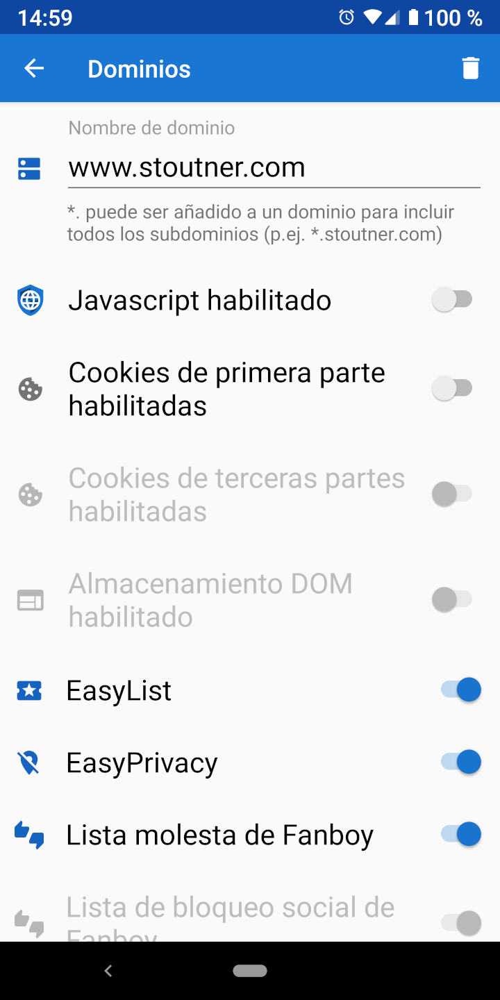

Navegación web segura Navegación web segura
Navegación web segura Navegación web seguraPor defecto Navegador Privado navega con Javascript, cookies y almacenamiento DOM desactivados. Sin embargo, algunas páginas web necesitan legítimamente estas características para funcionar correctamente. La configuración de dominio puede activar automáticamente un conjunto específico de características al visitar un dominio designado.

When visiting a domain that has domain settings specified, the background of the URL text box is green.